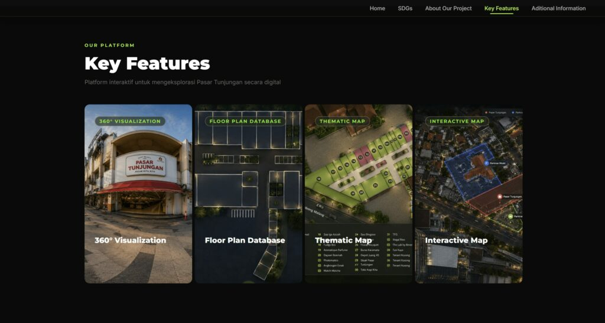
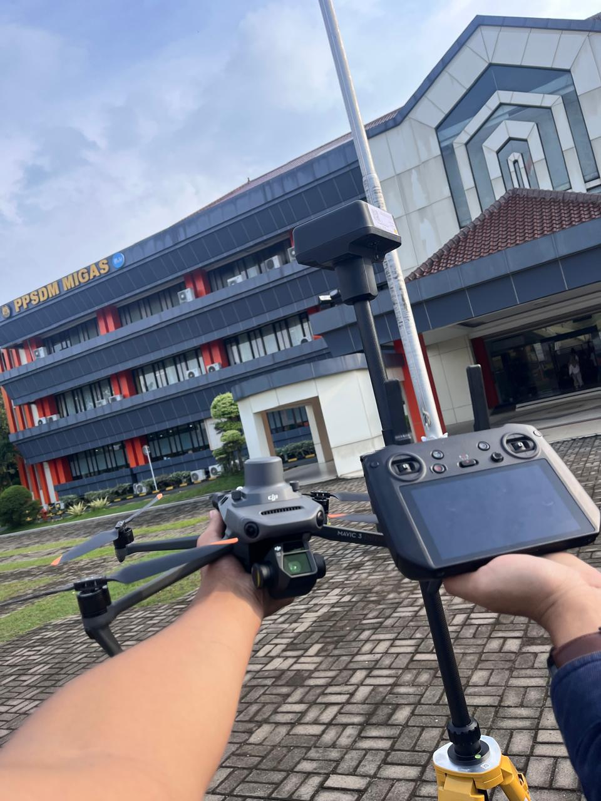
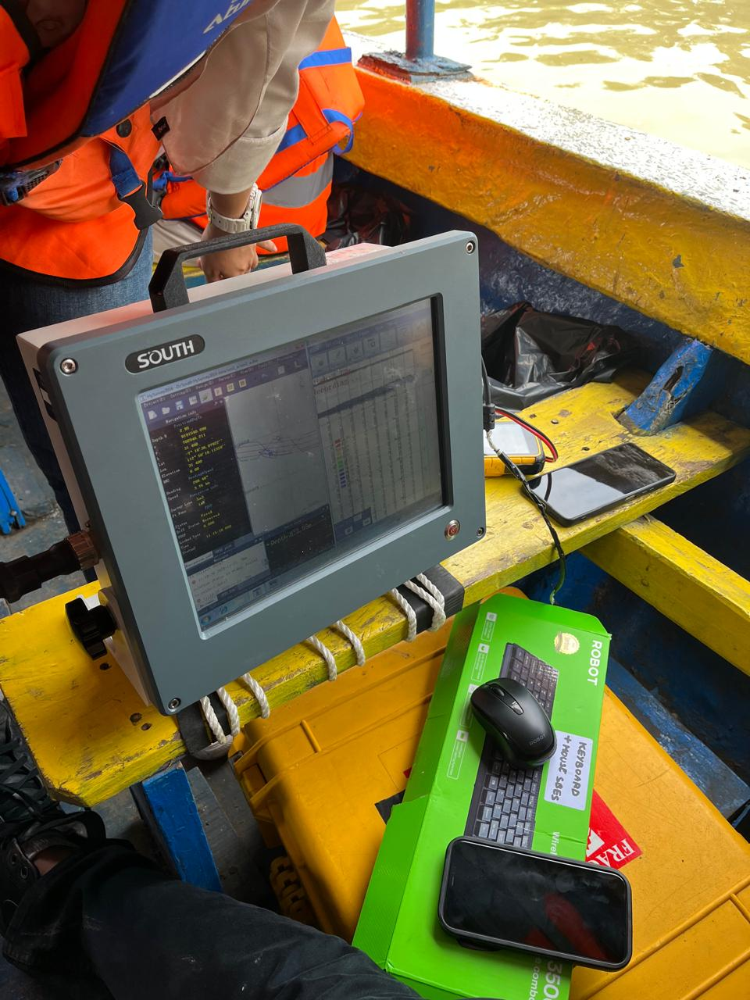
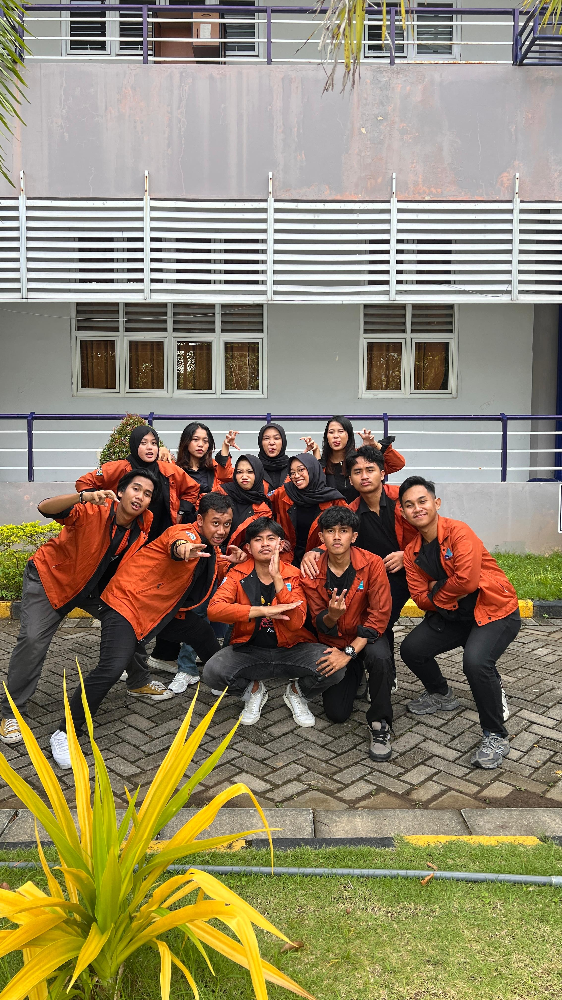

Our Work
Selected Projects
Explore our projects developed through geospatial technology, WebGIS, mapping, and spatial data processing.

WEBGIS
eEconomic Tunjungan Market
Interactive 360° WebGIS platform for Tunjungan Market integrating thematic mapping, business data, and spatial information.
View Project ↗
PHOTOGRAMMETRY
Aerial Photogrammetry
UAV photogrammetry project for aerial mapping, GCP measurement, and orthophoto generation.
View Project ↗
GIS
Hydrographic Survey and Bathymetric Mapping
Interactive geographic visualization designed to provide accessible spatial information.
View Project ↗
GNSS
Terrestris Survey
Geodetic surveying and data processing for spatial positioning.
View Project ↗
LiDAR
Organizational Project Management
LiDAR data processing and terrain visualization for geospatial analysis.
View Project ↗